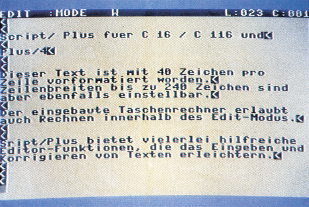
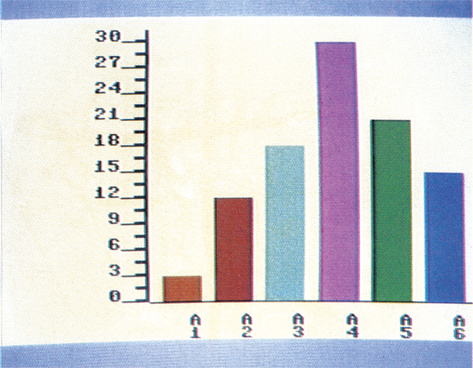

Profi-Software für C 16/C 116 und Plus/4
Die »kleinen« Commodore-Computer eignen sich auch für semiprofessionelle Anwendungen. Dies beweisen das Textverarbeitungs- und Tabellenkalkulationsprogramm von Precision Software.
Zu einem relativ günstigen Preis (jeweils 39 Mark) werden für den Plus/4 und seine kleineren Brüder ein Textverarbeitungs- und ein Tabellenkalkulationsprogramm angeboten, die es durchaus mit vergleichbaren Programmen für den C 64 aufnehmen können. Die Programme liegen als Steckmodul für den Expansion-Port vor. Sie werden jedoch nicht sofort nach dem Einschalten des Computers automatisch gestartet, wie man dies von C 64-Modulen kennt. Der Computer meldet sich zunächst wie gewohnt mit der Einschaltmeldung zuzüglich der Zeile:
»SCRIPT/PLUS ON FUNKTION KEY 2« beziehungsweise »CALC/PLUS ON FUNKTION KEY 2«.
Mit anderen Worten erspart man sich das lästige Ein- und Ausstecken des Moduls. Man kann mit dem C 16, C 116 und Plus/4 wie gewohnt arbeiten und das jeweilige Programm bei Bedarf mit der Funktionstaste <F2> oder mit »SYS 1578« starten.
Textverarbeitung auf Tastendruck
Script/Plus erinnert sehr stark an den Textverarbeitungsklassiker Easyscript für den C 64, der ebenfalls von Precision Software entwickelt wurde, bietet jedoch einiges mehr.
Nach dem Aktivieren mit <F2> kann der Anwender in einem Menü die Textbreite zwischen 40 und 240 Zeichen einstellen. Zusätzlich kann das Speichermedium (Floppy oder Datasette) und der Druckertyp ausgewählt werden. Als Druckertypen werden unter anderem Commodore-, Epson- und kompatible, Typenrad-, Qume- und Diablo-Drucker angeboten.
Wurden die nötigen Menüeinstellungen getroffen, gelangt man in den Texteingabemodus. Der Text wird auf 24 Zeilen je 40 Zeichen dargestellt. Die erste Zeile ist als Kommandozeile reserviert, und versorgt den Bediener mit nützlichen Informationen und Kommentaren. Für die Texteingabe steht nun die gewünschte Textbreite zur Verfügung (Bild 1). Überschreitet man die Textbreite von 40 Zeichen, so scrollt der Bildschirm automatisch mit. Wird die Textlänge überschritten, so wird das gerade bearbeitete Wort in die nächste Zeile gezogen. Dieser Wordwrap-Modus kann aber auch ausgeschaltet werden.

Die Texteingabe erfolgt wie gewohnt, jedoch mit der Einschränkung, daß Script/Plus keine deutschen Umlaute darstellen kann, was sicherlich ein Nachteil ist. Die Cursor-Tasten behalten fast dieselben Funktionen wie im Basic, wodurch das Editieren des Textes kaum Mühe bereiten dürfte. Die <CLR/HOME>-Taste löscht jedoch nicht wie gewohnt den Bildschirm, sondern setzt den Cursor an den Textanfang.
Script/Plus bietet eine Reihe komfortabler Anweisungen und Befehle, die fast ausschließlich mit der <ESC>-Taste aufgerufen werden. Wird diese Taste betätigt, blinkt in der Kommandozeile das Wörtchen »MODE«, wodurch der Anwender daran erinnert werden soll, einen Befehl einzugeben. Der <ESC>-Taste folgt in der Regel eine weitere Taste, die den Befehl eindeutig darstellt. In manchen Fällen wird noch die <CTRL>- und <SHIFT>-Taste hinzugezogen. Zusätzlich sind die Funktionstasten mit nützlichen Befehlen belegt, die jedoch ebenfalls über eine <ESC>-Sequenz erreicht werden können. Zu guter Letzt gibt es noch Anweisungen, die direkt über die <CTRL>-Taste erreicht werden.
Eine Übersicht aller wichtigen Befehle und Funktionen gibt die Tabelle.
| Editor-Funktionen: | ||
|---|---|---|
| Cursor-Tasten wie in Basic! | ||
| Ausnahme | : | <CLR> = Textanfang |
| <CTRL+U> | : | Groß/Klein-Schrift |
| <CTRL+N> | : | Dezimal-Eingabe |
| <CTRL+C> | : | Eintrag löschen |
| <CTRL+G> | : | springt zum Textende |
| <CTRL+I> | : | Einfügemodus |
| <CTRL+W> | : | springt zum nächsten Wort |
| <CTRL+E> | : | springt zum vorigen Wort |
| <CTRL+P> | : | springt zum nächsten Absatz |
| <CTRL+O> | : | springt zum vorigen Absatz |
| <CTRL+F> | : | Absatz neu formatieren |
| <RETURN> | : | Absatz-Ende |
| <SHIFT+RETURN> | : | nächste Zeile |
| Funktionstasten: | ||
| <F1> | : | Ausgabe auf Bildschirm |
| <F4> | : | Ausgabe abbrechen |
| <F2> | : | lädt Dokument |
| <F5> | : | speichert Dokument |
| <F3> | : | springt zum Tabulator |
| <F6> | : | setzt Tabulator |
| <F7> | : | Directory |
| <HELP> | : | Kurzanleitung |
| Kommandos: | ||
| <ESC> j | : | Textspeicher umschalten |
| <ESC> o | : | Ausgabe |
| <ESC> INST | : | Zeile einfügen |
| <ESC> DEL | : | Zeile löschen |
| <ESC> e a | : | löscht Dokument |
| <ESC> e r | : | löscht Rest ab Cursor |
| <ESC> h m | : | sucht Suchstring |
| <ESC> r | : | Textstelle markieren |
| <ESC> x | : | Textstelle verschieben |
| <ESC> a | : | Textstelle kopieren |
| <ESC> F | : | Textstelle abspeichern |
| <ESC> s | : | Suchstring und Ersatzstring belegen |
| <ESC> @m | : | suchen und ersetzen |
| <ESC> d | : | löschen |
| <ESC> R | : | verschiebt Spalte |
| <ESC> t | : | setzt Tabulator |
| <ESC> c | : | löscht Tabulator |
| <ESC> z | : | löscht alle Tabs |
| <ESC> T | : | zeigt Tabulator |
| <ESC> <STOP> | : | Ende |
| Rechenfunktionen: | ||
| <ESC> + | : | Addition |
| <ESC> - | : | Subtraktion |
| <ESC> * | : | Multiplikation |
| <ESC> / | : | Division |
| <ESC> % | : | Prozent |
| <ESC> ? | : | Ergebnis ausgeben |
| <ESC> = | : | Ergebnis speichern |
| <ESC> <CRTL+E> | : | Ergebnis löschen |
| Formatkommandos nach <ESC> 9: | ||
| lf1 | : | Linefeed mit Return |
| ju1/0 | : | Blocksatz ein/aus |
| cn1/0 | : | Zentrieren ein/aus |
| lm.. | : | Linker Rand |
| rm.. | : | Rechter Rand |
| pl.. | : | Papierlänge |
| tl.. | : | Zeilen pro Seite |
| sp.. | : | Zwischenzeilen |
| fp.. | : | neue Seite |
| nb | : | Kommentar |
| pt.. | : | setzt Pitch |
| lp.. | : | Zeilen pro Inch |
| hd. | : | Kopfzeile |
| ft. | : | Fußzeile |
| p#.. | : | Seitennummer |
| <ESC> # | : | Ausgabe der Seitennummer in Kopf- oder Fußzeile |
Script/Plus arbeitet mit 2 Textseiten, die mit <ESC> <J> umgeschaltet werden.
Formbriefe lassen sich ohne viel Mühe anfertigen.
Script/Plus ist zusätzlich mit einem »Taschenrechner« ausgerüstet, der schnelles Rechnen in den vier Grundrechenarten ermöglicht.
Das 155 Seiten umfassende englische Handbuch ist sehr ausführlich und ermöglicht es, sich sehr schnell in das Programm einzuarbeiten. Ein weiterer Pluspunkt des Programms ist die integrierte Anleitung. Sie kann durch Drücken der <HELP>-Taste durchgeblättert werden. So muß nicht wegen jeder unbekannten Anweisung im Handbuch nachgeschlagen werden, sondern kann auch schnell durch die Hilfsbildschirme in Erfahrung gebracht werden. Der sich im Speicher befindliche Text wird dabei natürlich nicht zerstört.
Gut kalkulieren mit Calc/Plus
Die Tabellenkalkulation gehört mit zu den weitverbreitetsten Einsatzgebieten eines Mikrocomputers. Dies wußten wohl auch die Entwickler des Plus/4 und statteten diesen mit den drei meistbenötigten Anwenderprogrammen (Textverarbeitung, Dateiverwaltung und Tabellenkalkulation) aus. Wer aber versucht hat, mit der eingebauten Tabellenkalkulation des Plus/4 professionell zu arbeiten, hat nach kurzer Zeit wieder zu Taschenrechner, Bleistift und Papier zurückgefunden. Calc/Plus dagegen erinnert sehr stark an Visicalc für die alten Commodore-Computer CBM 30xx, 40xx und 80xx. Das Programm arbeitet in zwei Dimensionen. Das heißt es gibt nur eine Ebene, bestehend aus Zeilen und Spalten. Die einzelnen Felder lassen sich beliebig mit Label oder Zahlen belegen. Zahlenfelder können beliebig untereinander addiert, subtrahiert, multipliziert, dividiert oder potenziert werden. Soll eine Zahlenkolonne addiert werden, kann dies über die »@SUM«-Anweisung erfolgen. Leider fehlt eine Anweisung, die aus einer Zahlenreihe den Durchschnitt ermittelt. Diese nützliche Funktion findet man sonst in vielen Programmen dieser Art. Dafür verfügt Calc/Plus über andere nützliche Anweisungen wie zum Beispiel »@ABS« (wandelt in absolute Zahlen um), »@EXP« (Exponentialfunktion), »@INT« (Integer) und »@LOG« (natürlicher Logarithmus). Die »@RDOL«-Anweisung rundet eine Zahl auf 2 Stellen hinter dem Komma. Mit »@RINT« kann eine Zahl zur nächstliegenden Integer-Zahl gerundet werden.
Mit <F1> gelangt der Benutzer ins Funktions-Menü. Hier stehen insgesamt 10 Menüpunkte zur Verfügung:
| D | = | Disketten-Funktionen |
| T | = | Kassetten-Funktionen |
| P | = | Drucker-Funktionen |
| M | = | Editor-Funktionen |
| R | = | Rechen-Funktionen |
| F | = | Formatwahl |
| C | = | Farbwahl |
| W | = | sonstige Funktionen |
| G | = | grafische Darstellung |
| HELP | = | HELP-Screens |
Die Disketten- und Kassetten-Funktionen dienen ausschließlich zum Laden und Speichern der Tabellen. Das Druckermenü erlaubt es, die Tabellen oder Grafiken aufs Papier zu bringen. Mit Hilfe der Editor-Funktionen lassen sich in bestehende Tabellen einzelne Spalten oder Zeilen einfügen, löschen oder kopieren. Im Rechner-Menü läßt sich die Art der Berechnung festlegen. So kann zum Beispiel nach jeder Eingabe die Tabelle automatisch neu berechnet werden. Dies ist allerdings bei umfangreicheren Tabellen sehr zeitaufwendig. Im Formatmenü läßt sich das Format der Felder sowie deren Inhalt beliebig verändern. Im Grafikmenü können Ausschnitte der Tabelle auch als Balkengrafik dargestellt werden (Bild 2). In die Grafik lassen sich nachträglich Kommentare und Beschriftungen einfügen. Diese Grafiken können anschließend auf grafikfähigen Commodore-Druckern ausgedruckt werden. Der letzte Menüpunkt »HELP« läßt sich auch ohne vorheriges Drücken der <F1>-Taste anwählen. Mittels der <HELP>-Taste erreicht man eine Kurzanleitung von Calc/Plus in drei Hilfsbildschirmen. Damit finden sich auch Anfänger sehr schnell in diesem Programm zurecht.

Auch die anderen Funktionstasten sind mit nützlichen Anweisungen belegt, die zum Editieren der einzelnen Felder dienen. Ein Feld kann entweder mit den Cursor-Tasten erreicht werden oder direkt durch Eingabe der Koordinate angesprungen werden. Ein einmal zum Label deklariertes Feld kann mit Hilfe der <F4>-Taste (wenn dies ohne weiteres möglich ist) in ein Zahlen-Feld verwandelt werden. Dieser Vorgang läßt sich natürlich in jedem Fall umkehren.
Grafik inklusive
Ein großes Plus verdient die Tabellenkalkulation für die grafische Darstellung der Zahlenwerte. Das Programm bedient sich dabei der Balkengrafik. Es können maximal 6 Balken gleichzeitig am Bildschirm dargestellt werden. Dazu wird das erste Feld angewählt und anschließend entschieden, ob Vergleichswerte in derselben Zeile oder Spalte angezeigt werden sollen. Befindet man sich bereits in der grafischen Darstellung, so kann mit Hilfe der Cursor-Tasten der Bildausschnitt beliebig über die gesamte Tabelle verschoben werden. Wurde der gewünschte Ausschnitt bestimmt, so läßt sich dieser nachträglich beschriften und ausdrucken.
Das englische Handbuch zu Calc/Plus umfaßt 76 Seiten und erleichtert das Einarbeiten in dieses Programm durch viele anschauliche Beispiele. Zum kurzen Nachschlagen dienen allerdings eher die Hilfsbildschirme des Programms, wo alle Befehle kurz erläutert werden.
Gutes Preis-/Leistungsverhältnis
Script/Plus und Calc/Plus bieten erstaunliche Leistungen. Da sich die Programme auf einem Steckmodul befinden, sind sie ohne lange Ladezeiten sofort verfügbar. Script/Plus und Calc/Plus sind nicht nur Besitzern einer Diskettenstation vorbehalten, da die Texte und Tabellen auch auf Kassette gespeichert werden können. So kommen auch diese Computer für semiprofessionelle Anwendungen in Frage. Bleibt zu hoffen, daß in Zukunft noch mehr solcher guter und preiswerter Anwender-Software auf den Markt kommt.
(Christian Quirin Spitzner/nj)Bezugsquelle: Ingenieurbüro für Informationstechnik, Dipl.-Ing. H. Stechmann, Postfach 210, 2152 Horneburg, Telefon: 04163/2176, Preis: Jeweils 39 Mark mit englischem Handbuch